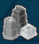

The Game Makers
Board Game Arena 官方规则文档
Overview
The Game Makers is a worker-placement game where each player takes turns gathering components to build the world's greatest games. Along the way, unneeded components can be repurposed to form workers, structures, and other upgrades to increase your factory's efficiency. Fill your display case and become the greatest game maker ever.
How does the game work?
There is no turn order. Each player takes their turn simultaneously, moving their forklifts from the "ready" position to a part of the warehouse. A new turn cannot begin until all forklifts are out of the "ready" position. When all players have finished, the warehouse wheel turns and moves to the next wedge, changing which components are available. You can move your forklifts to any available space, even a space that has your own or another player's forklifts on it.
The Warehouse Wheel
The warehouse wheel is how you control your workers and gain components to build games. When your forklift(s) are in the "ready" zone, you move them to a space to gain that component. After moving, the forklift cannot be moved again until it's returned to the "ready" position. Each component's "quality" (level 3, 2, or 1) is related to its distance from the "ready" position. A level 3 component will be the furthest away, thus taking the most time to get your forklift back to ready after retrieving it.
Components
When you take a resource, you must decide whether to use it as a component or a company asset. Each component serves two purposes. One is as a game part (component). The other is used for upgrading your factory (company asset) and is unique to each type of resource. Once you decide, you cannot switch it back.
| Icon | Component | Company Asset | What does it do as an asset? |
|---|---|---|---|
| Cards | Contract | Represents a game contract to be fulfilled. Once it's fulfilled (has all its parts), it can be placed on your display case. | |
| Punchboard | Machinery | Placed on the assembly line to reduce the needed quality of contract components. | |
| Wood | Worker | Gain resources or enhancements to gain more resources or market advancements. | |
| Dice | Marketing Multiplier | Multiplier for the endgame score of the given game type. | |
 |
Plastic | Building | Used to activate structures that provide upgrades and bonuses. |
Contracts/Cards
Once you have all the parts for a game, you can fulfill the contract at any time and put it into your display case. You will earn the rewards noted at the bottom of the card. There are four types of games: set collection, war, co-op, strategy.
You can "overpay" for a contract, using components that are "better" than what it needs. For example, if a contract needs a level 2 plastic (white tower), you can substitute a level 3 plastic (black tower) to complete it.
Workers/Wood
When not being used as wood, workers are used as enhancements to increase your factory's yields. Workers (as assets) stay in the break room until assigned somewhere. They can be assigned to an enhancement, gain a single resource, or a structure (which is a unique bonus picked before the game starts, displayed in the lower right). Each worker can only be used once and many spaces require a specific level of worker. But when the warehouse wheel makes a full rotation, it's "time for a break"! All workers in the factory are moved back to the break room and can be reassigned. Workers can be moved at any time during your turn, even if you just gained them.
Enhancements
Workers in the upper row (represented by an eye
| Icon | Row | Enhancement |
|---|---|---|
| Upper | Add the number of workers to any Dice actions or Market Advancements. This also applies to spaces moved up in the marketing column (increasing the VP you earn per completed game) | |
| Lower | Draw one more card or tile for each worker placed in one of these slots. |
Marketing/Dice
Dice can be used as a component or to increase your gains from completed games. Every die gained from the warehouse (no matter the level) is rolled. If used as an asset, you can use the number rolled to move one of your marketing tracks up that many spaces. There are five tracks, one for each type of game and one for trees. The number in the marketing track is a multiplier for your marketing score. You can see how the game is scored by the marketing tile below the tracks. Each track caps out at 5 (except the green Tree track, which caps at 4). Be careful that your columns are greater than 0 or you won't score points for that game.
| Dice Level | Range | Faces |
|---|---|---|
| 1 | 1-4 | |
| 2 | 2-5 | |
| 3 | 3-6 |
Machinery/Punchboard (blue hexagons)
Punchboards, when turned into a company asset, become machinery. Machinery is placed in your assembly line, which is two horizontal lines in the middle of the gameboard. Every set of three horizontally contiguous icons represents a component you can make "in-house". This reduces the required quality of the component needed for any contract. For example, if you have 3 dice icons next to each other, you can satisfy a contract that needs a level 3 die with a level 2 die.
If your discounts reduce the quality of a component to 0, you don't have to even provide that component. For example, if you have 3 sets of punchboards in your assembly line, you don't have to provide punchboards to any contracts that need them anymore.
BGA automatically corrects for these reductions in your display so you don't have to worry about remembering your discounts yourself.
Tweenies
Assembly lines provide a secondary bonus with tweenies. Available tweenies are displayed below the assembly line and go in the diamond-shaped space between four machinery hexagons. They can be used any time, but only once. Mouseover the tweenie to see its effect.
Buildings/Plastic
Buildings are used to activate structures. Before each game, you choose 3 structures (one for each type) to add to your gameboard. But you can only use the benefit of these structures if they have the required buildings. Unlike contracts, you must use the exact quality of the building needed. (You cannot substitute a Level 3 building if the structure needs a Level 2).
| Structure Type | Effect |
|---|---|
| A | Gives VP for having met certain requirements in your display case. |
| B | Creates a space where you can use a worker to gain a resource. |
| C | Gives you an additional resource when you gain a specified resource. |
Trees
You're an upstanding manufacturer with a responsibility to the environment, so you need to plant trees. Trees are gained from A) a reward from a contract B) achieving the requirements of a circle tree space (ex. have 6 war games in your display case, discard any 2 plastic, etc.). Each tree planted adds VP to your final score (and is affected by its marketing track multiplier).
End Game
The game ends when a player fills their 12th display case slot. At that point, the current turn finishes. Then the wheel rotates and all players complete one more turn.
Scoring
Part 1 is the score based on each game's unique properties. Often, this depends on where these games are placed in the display case and what games they are adjacent to. For example, Werewords scores 1 VP for each game in the two rightmost columns that use tiles as components.
Part 2 is the number of games of a certain type multiplied by the number of that game type's marketing track. If the marketing track is at 0, no points are scored for that type. For example, if you have 3 war games and the war game marketing track is at 0, you will score 0 points for the number of war games you have (3 x 0 = 0).
Part 3 is the score gained from your A structure, if it is activated.
All the parts are added together to come up with a total. Ties are broken by whichever player has the highest ranking game on BoardGameGeek.